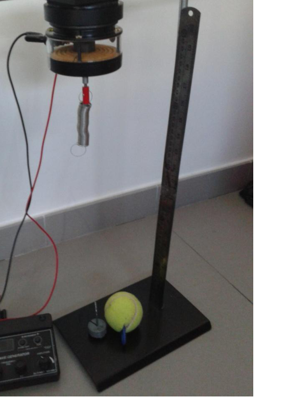

Movimiento armonico simple - resorte
PE27. Escuela ORT - Sede Almagro.
Ciudad de Buenos Aires.
Introducción
Un tipo de movimiento oscilatorio muy importante es el movimiento armónico simple, el
que, por ejemplo, experimenta un cuerpo unido a un resorte en ausencia de fricción. En el
equilibrio, el resorte no ejerce ninguna fuerza sobre el cuerpo; sin embargo, al
desplazarlo una cantidad 𝑥 de esta posición, el resorte ejerce una fuerza que viene dada
por la ley de Hooke:
𝐹= −𝑘𝑥
(1)
En donde 𝑘es la constante del resorte que caracteriza la rigidez del mismo. Esta fuerza
es una fuerza restauradora, es decir se opone al sentido del desplazamiento respecto del
punto de equilibrio. Los cuerpos que se encuentran sometidos solamente a esta fuerza
son denominados osciladores armónicos simples. Para determinar el movimiento que
hará el sistema es necesario resolver la ecuación de Newton que para el caso de
movimiento en una sola dirección viene dada por:
𝐹𝑥= 𝑚𝑎𝑥 (2)
Reemplazando entonces queda:
−𝑘𝑥= 𝑚𝑎𝑥 (3)
Al ser un movimiento oscilatorio, es útil definir una frecuencia característica para el
sistema, que en el caso mecánico viene dada por:
𝜔0 = 𝑘
𝑚
(4)
Esta frecuencia característica depende solamente de las propiedades mecánicas del
sistema y no depende de los parámetros iniciales del movimiento en cuestión. La solución
para la ecuación (3) viene dada por:
𝑥 𝑡 = 𝐴cos 𝜔0𝑡+ 𝜑
(5)
Siendo 𝜑 el valor inicial de la fase que depende de la elección del origen de los tiempos.
Para el caso en que la masa parte del reposo desde el punto de elongación máximo la
solución viene dada por:
𝑥 𝑡 = 𝐴cos 𝜔0𝑡
(6)
En general esta descripción es una idealización del caso real en el cual hay que tener en
cuenta la existencia de fuerzas de fricción, dichas fuerzas se originan debido a que el
OAF 2016 - 137 sistema está inmerso en un fluido (generalmente aire, aunque puede ser aceite, agua, etc.) porlo que se observa que a medida que avanza el tiempo la oscilación se atenúa hasta que se detiene. Esto puede tenerse en cuenta tomando la fuerza viscosa de la manera: 𝐹= −𝑏𝑣 (7) Se puede ver que la fuerza aumenta con la velocidad de la partícula. La ecuación de Newton queda en este caso: −𝑘𝑥−𝑏𝑣= 𝑚𝑎 (8) En definitiva, queda: 𝑎+ 2𝛽𝑣+ 𝜔02𝑥= 0
(9) En donde 𝛽= 𝑏 2𝑚es el parámetro de amortiguamiento del sistema. El movimiento de la partícula ahora dependerá del parámetro teniendo tres regímenes distintos: Sobre amortiguado: El parámetro de amortiguamiento es muy grande por lo que el sistema no oscila: al apartarlo del equilibrio, el sistema vuelve lentamente a esta posición. Crítico: Como en el caso anterior el sistema no presenta oscilación y tiende al equilibrio más rápido que en el caso sobre amortiguado. Débilmente amortiguado: El sistema presenta oscilaciones y se atenúa a medida que avanza el tiempo hasta detenerse.
En los sistemas amortiguados es útil definir un factor de calidad 𝑄del sistema como la relación entre la energía máxima almacenada 𝐸 y la energía perdida media por periodo∆𝐸, que en términos de las variables características del sistema se puede escribir como: 𝑄= 𝜔0 2𝛽
(10) El factor de calidad representa una medida de la falta de amortiguamiento de un oscilador. Para valores elevados de 𝑄,el amortiguamiento es débil, lo que hace que la disminución de la amplitud sea muy lenta. En caso contrario, un factor de calidad bajo, la oscilación sería rápidamente amortiguada, que es útil en ciertos sistemas mecánicos, por ejemplo, la corteza terrestre para las ondas sísmicas.
Por último se puede considerar un sistema oscilante en el cual hay presente una fuerza exterior variable 𝐹(𝑡), lo queda lugar a un oscilador armónico forzado. En este caso hay que incluir esta fuerza en la ecuación de Newton: −𝑘𝑥−𝑏𝑣+ 𝐹(𝑡) = 𝑚𝑎 (11) En este caso la forma de la solución no es muy ilustrativa pero es importante considerar que la fuerza exterior está inyectando energía en el sistema por lo que el mismo no llegaría al equilibrio como en el caso del oscilador armónico amortiguado si no que oscilará siempre y cuando la fuerza esté encendida. Si consideramos la fuerza exterior como un movimiento armónico, esta también estará caracterizada por alguna frecuencia𝜔que será determinada por el sistema del forzante. Un sistema de estas características puede presentar un fenómeno característico llamado resonancia, en el cual la amplitud de oscilación del sistema se hace máxima, esta frecuencia puede calcularse a partir de la solución obteniendo: 𝜔𝑅= 𝜔02 −2𝛽2 (12) Modificando la frecuencia de la fuerza externa y analizando la amplitud del movimiento para distintas frecuencias se puede analizar la resonancia del sistema. Además, se redefine entonces el factor de calidad en términos de esta frecuencia de resonancia: 𝑄= 𝜔𝑅 2𝛽
(13)
Objetivo Determinar experimentalmente la constante elástica 𝑘 del resorte y la frecuencia de resonancia de un oscilador armónico amortiguado.
138 - OAF 2016 Elementos:
- Pie de laboratorio
- Resorte
- Masas y portapesa
- Balanza
- Regla
- Parlante de computadora
- Generador de funciones
- Pelotita de tenis
Procedimientos y consignas 1.1. Determinación de la constante elástica a) Determinar la longitud natural del resorte. b) Elegir un conjunto de masas, colgarlas del resorte y medir el estiramiento del mismo. c) Graficar los datos experimentales del peso y estiramiento correspondiente. d) A partir del gráfico y usando la ecuación (3), determinar la constante elástica𝑘.
1.2. Determinación de la frecuencia de resonancia a) Mediante la utilización del generador de funciones barrer distintas frecuencias hasta ubicar la zona donde se encuentrala frecuencia de resonancia. b) Realizar un barrido de frecuencias espaciado uniformemente midiendo la amplitud de la oscilación. c) Realizar un gráfico de amplitud en función de frecuencia. d) Determinar un criterio para obtener la frecuencia de resonancia. e) A partir de este último valor, obtener el parámetro de amortiguamiento y el factor de calidad utilizando las ecuaciones (12) y (13).
OAF 2016 - 139

Topic: Oscillations & Waves Metodi: Experimental Data Analysis, Simple Harmonic Motion Analysis Competenze: Physical Reasoning, Experimental Data Analysis Objects: Spring Fonte: Testo (PDF) — p.3
Semplice movimento armonico - resorte
PE27. Scuola ORT - Sede Almagro.
Città di Buenos Aires.
Introduzione Un tipo di movimento oscillatorio molto importante è il movimento armonico semplice, il che, per esempio, sperimenta un corpo unito a una primavera in assenza di attrito. En el L’equilibrio, la primavera non esercita alcuna forza sul corpo; tuttavia, il spostare una quantità x di questa posizione, la resorte esercita una forza che viene data per legge di Hooke: 𝐹= −𝑘𝑥 (1) In cui si trova la costante della resorsa che caratterizza la rigidità della stessa. Questa forza La forza di ristabilitazione è un’energia che si oppone al senso di spostamento rispetto al punto di equilibrio. I corpi che si trovano sottoposti solo a questa forza sono chiamati oscillatori armonici semplici. Per determinare il movimento che il sistema sarà necessario risolvere l’equazione di Newton che per il caso di movimento in una sola direzione è dato da: Fx= max (2) Rimpiazzando allora resta: -kx=max (3) Essendo un movimento oscilante, è utile definire una frequenza caratteristica per il sistema, che nel caso meccanico viene dato da: 𝜔0 = 𝑘 𝑚 (4) Questa frequenza caratteristica dipende solo dalle proprietà meccaniche del La Commissione ha adottato una decisione che non è stata adottata. La soluzione per l’equazione (3) viene data da: x t = Acos ω0t+ φ (5) Essendo φ il valore iniziale della fase che dipende dalla scelta dell’origine dei tempi. Per il caso in cui la massa parte dal riposo dal punto di massima allungamento, la massa è La soluzione viene data da: x t = Acos ω0t (6) In generale, questa descrizione è un’idealizzazione del caso reale in cui si deve avere in La forza di attrito si verifica in base al fatto che il
OAF 2016 - 137 sistema è immerso in un fluido (generalmente aria, anche se può essere olio, acqua, ecc.) che si osserva che l’oscillazione si attenua con il passare del tempo. finché non si ferma. Questo può essere considerato prendendo la forza viscosa della modo: 𝐹= −𝑏𝑣 (7) Si può vedere che la forza aumenta con la velocità della particella. L’equazione di Newton rimane in questo caso: −𝑘𝑥−𝑏𝑣= 𝑚𝑎 (8) In breve, resta: 𝑎+ 2𝛽𝑣+ 𝜔02𝑥= 0
(9) Dove β= 𝑏 2° il parametro di ammortizzazione del sistema. Il movimento della Particolo ora dipenderà dal parametro avendo tre regimi diversi: Over-amortizzato: il parametro di amortizzazione è molto grande per cui il sistema non oscilla: allontanandolo dall’equilibrio, il sistema torna lentamente a Questa posizione. Critico: come nel caso precedente il sistema non presenta oscillazioni e tende a Il tasso di cambio è più elevato rispetto al tasso di cambio. Debole amortizzazione: il sistema presenta oscillazioni e si attenua a misura che passa il tempo fino a fermarsi.
In sistemi ammortizzati è utile definire un fattore di qualità Q del sistema come la Relazione tra la massima energia conservata E e l’energia media persa per period∆E, che in termini di variabili caratteristiche del sistema si può scrivere come: 𝑄= 𝜔0 2𝛽
(10) Il fattore qualità rappresenta una misura della mancanza di amortizzazione di un oscillatore. Per valori elevati di Q, l’ammortizzazione è debole, il che rende la la diminuzione dell’ampiezza è molto lenta. In caso contrario, un fattore di qualità inferiore, la L’oscillazione sarebbe rapidamente ammortizzata, che è utile in alcuni sistemi meccanici, per ad esempio, la corteccia terrestre per le onde sismiche.
Infine si può considerare un sistema oscillante in cui è presente una forza. F (t) esterno variabile, che rende luogo ad un oscillatore armonico forzato. In questo caso c’è che includono questa forza nell’equazione di Newton: −𝑘𝑥−𝑏𝑣+ 𝐹(𝑡) = 𝑚𝑎 (11) In questo caso la forma della soluzione non è molto illustrativa ma è importante considerare che la forza esterna sta injectando energia nel sistema, e quindi non lo fa. che raggiungerebbe l’equilibrio come nel caso dell’oscillatore armonico amortizzato se non Oscilla finché la forza è accesa. Se consideriamo la forza esterna come un movimento armonico, anche questa sarà. La frequenza di un’operazione è determinata dal sistema del forzatore. Un sistema di queste caratteristiche può presentare un fenomeno caratteristico chiamato La risonanza, in cui l’ampiezza di oscillazione del sistema si ottiene massima, è La frequenza può essere calcolata a partire dalla soluzione ottenendo: 𝜔𝑅= 𝜔02 −2𝛽2 (12) Modificando la frequenza della forza esterna e analizzando la larghezza del movimento per diverse frequenze si può analizzare la risonanza del sistema. Inoltre, il fattore di qualità viene quindi ridefinito in termini di questa frequenza di Risonanza: 𝑄= 𝜔𝑅 2𝛽
(13)
Obiettivo Determinare sperimentalmente la costante elastica k della primavera e la frequenza di risonanza di un oscillatore armonico ammortizzato.
138 - OAF 2016 Elementi:
- Piede di laboratorio.
- Resorte
- Masse e portafogli
- Sbalzo .
- Regola .
- Parlante di computer .
- Generatore di funzioni
- Palla di tennis.
Procedure e consigli 1.1. Determinazione della costante elastica a) Determinare la lunghezza naturale della primavera. b) Selezionare un insieme di masse, appenderele alla primavera e misurare l’estensione del
- Proprio così. c) Grafica dei dati sperimentali relativi al peso e all’estensione. d) Sulla base del grafico e utilizzando l’equazione (3), determinare la costante elasticak.
1.2. Determinazione della frequenza di risonanza a) L’utilizzo del generatore di funzioni scansione diverse frequenze fino a individuare l’area di frequenza. b) effettuare una scansione di frequenze spaziate uniformemente misurando la amplitudine dell’oscillazione. c) realizzare un grafico di amplitudine in funzione della frequenza. d) Determinare un criterio per ottenere la frequenza di risonanza. (e) Da quest’ultimo valore si ottengono il parametro di ammortizzazione e il fattore di qualità utilizzando le equazioni (12) e (13).
OAF 2016 - 139
Topic: Oscillations & Waves Metodi: Experimental Data Analysis, Simple Harmonic Motion Analysis Competenze: Physical Reasoning, Experimental Data Analysis Objects: Spring Fonte: Testo (PDF) — p.3
The following is the list of the main components of the engine:
PE27. The following is the list of the activities of the Regional Development Fund:
City of Buenos Aires.
The first is the introduction. One very important type of oscillatory motion is the simple harmonic motion, the For example, you experience a body attached to a spring in the absence of friction. En el The spring does not exert any force on the body; however, the spring is not a force on the body. If you move a quantity x from this position, the spring exerts a given force. by Hooke ‘s law: 𝐹= −𝑘𝑥 (1) Where you are the spring constant that characterizes its rigidity. This force It is a restorative force, i.e. it opposes the sense of displacement relative to the The balance point. The bodies that are subjected to this force alone . They are called simple harmonic oscillators. To determine the movement that The system will need to solve the Newton equation that for the case of One-way motion is given by: Fx = max (2) Substituting then remains: -kx=max (3) As an oscillatory motion, it is useful to define a characteristic frequency for the system, which in the mechanical case is given by: 𝜔0 = 𝑘 𝑚 (4) This characteristic frequency depends only on the mechanical properties of the The system is not dependent on the initial parameters of the movement concerned. The solution for equation (3) is given by: x t = Acos ω0t+ φ (5) If φ is the initial value of the phase, it depends on the choice of the origin of the times. For the case where the mass rests from the point of maximum elongation the mass shall be solution is given by: x t = Acos ω0t (6) In general, this description is an idealization of the real case in which it is necessary to have in The fact that the force of friction is present is that the force of friction is caused by the
The Commission shall adopt delegated acts in accordance with Article 21 of Regulation (EU) No 1303/2013. system is immersed in a fluid (usually air, although it can be oil, water, The result is that the oscillation is attenuated as time passes. until it stops. This can be taken into account by taking the viscous force of the How: 𝐹= −𝑏𝑣 (7) You can see that the force increases with the velocity of the particle. The equation of Newton is left in this case: −𝑘𝑥−𝑏𝑣= 𝑚𝑎 (8) In short, it is: 𝑎+ 2𝛽𝑣+ 𝜔02𝑥= 0
(9) Where β is equal to 𝑏 2me the system cushioning parameter. The movement of the Particle will now depend on the parameter having three different regimes: Over-clutter: The cushioning parameter is very large so The system does not oscillate: by moving it away from the equilibrium, the system slowly returns to This position. Critical: As in the previous case the system does not oscillate and tends to The balance is faster than in the case of over-collateral. Weakly cushioned: The system oscillates and dims to the point of need It’s time to stop.
In damaged systems it is useful to define a system quality factor Q as the The ratio of maximum energy stored E to average energy lost per period∆E, which in terms of the system characteristic variables can be written as follows: 𝑄= 𝜔0 2𝛽
(10) The quality factor is a measure of the lack of amortization of a The oscillator. For high Q values, the buffer is weak, which makes the buffer less than 0. The decrease in amplitude is very slow. Otherwise, a low quality factor, the The oscillation would be quickly cushioned, which is useful in certain mechanical systems, by For example, the Earth’s crust for seismic waves.
Finally , it can be considered an oscillating system in which a force is present . The external variable F(t) gives rise to a forced harmonic oscillator. In this case there is which includes this force in Newton’s equation: −𝑘𝑥−𝑏𝑣+ 𝐹(𝑡) = 𝑚𝑎 (11) In this case the form of the solution is not very illustrative but it is important to consider That the outside force is injecting energy into the system so it doesn’t. It would reach equilibrium as in the case of the cushioned harmonic oscillator if not that It will oscillate as long as the force is on. If we consider the external force as a harmonious movement, this one will also be. The force is the force of the force. A system of these characteristics may present a characteristic phenomenon called The resonance, at which the system oscillation amplitude is maximized, is Frequency can be calculated from the solution by obtaining: 𝜔𝑅= 𝜔02 −2𝛽2 (12) By modifying the frequency of the external force and analyzing the amplitude of the motion The system resonance can be analysed for different frequencies. In addition, the quality factor is then redefined in terms of this frequency of Resonance: 𝑄= 𝜔𝑅 2𝛽
(13)
The objective Experimentally determine the spring elastic constant k and the frequency of The resonance of a cushioned harmonic oscillator.
The Commission shall adopt delegated acts in accordance with Article 21 of this Regulation. The following elements:
- Lab foot .
- Spring .
- Masses and bags
- Weigh it .
- Rule .
- Computer speaker .
- Function generator
- Tennis ball .
Procedures and slogans 1.1. Determination of the elastic constant (a) Determine the natural length of the spring. (b) Select a set of masses, hang them from the spring and measure the stretch of the I’m not. (c) Graph experimental data on the weight and corresponding stretch. (d) From the graph and using the equation (3), determine the elasticak constant.
1.2. Determination of the resonance frequency (a) By using the function generator scan different frequencies The area where the resonance frequency is located. (b) Perform a uniformly spaced frequency scan by measuring the the amplitude of the oscillation. (c) Draw a frequency-based width chart. (d) Determine a criterion for the resonance frequency. (e) From the latter value, obtain the buffer parameter and the factor quality using equations (12) and (13).
The following points shall be added:
Topic: Oscillations & Waves Metodi: Experimental Data Analysis, Simple Harmonic Motion Analysis Competenze: Physical Reasoning, Experimental Data Analysis Objects: Spring Fonte: Testo (PDF) — p.3